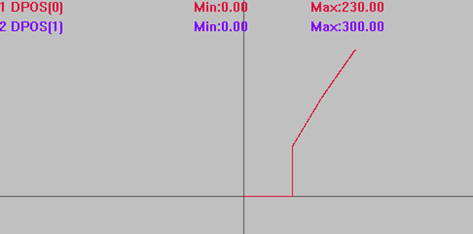
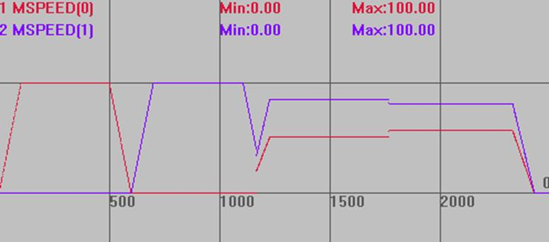
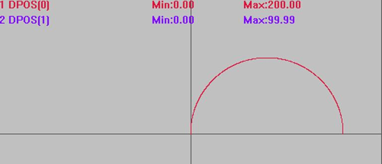
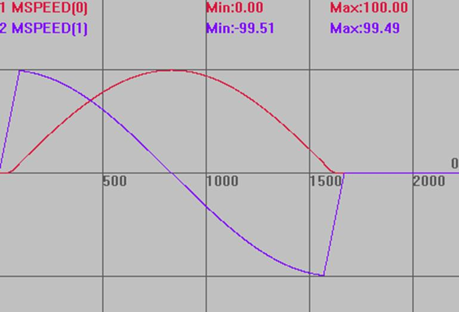
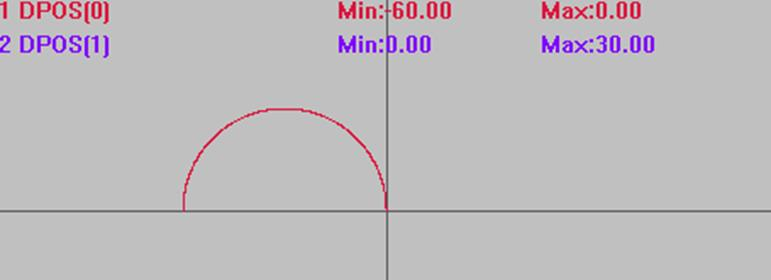
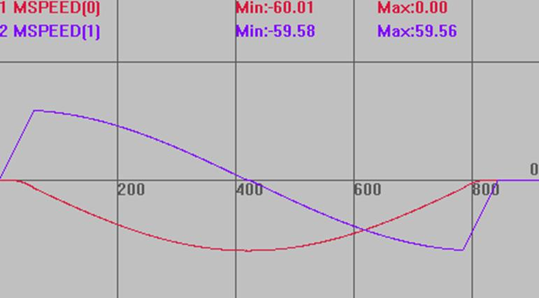
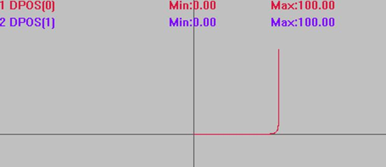

|
类型 |
轴参数 | ||||||||||||||||||||||||||||||||||||
|
描述 |
拐角减速等模式设置。 | ||||||||||||||||||||||||||||||||||||
|
语法 |
CORNER_MODE(轴号) = mode mode：不同的位代表不同的意义，位可以同时使用。
| ||||||||||||||||||||||||||||||||||||
|
适用控制器 |
通用 | ||||||||||||||||||||||||||||||||||||
|
例子 |
为了方便说明每个位的功能，例程都是单独位设置，实际应用时可以多位同时使用。 比如CONNER_MODE=2+8，打开自动拐角减速和曲率限速
例一：拐角减速 开启拐角减速后，若设置SP运动指令的STARTMOVE_SPEED(SP指令起始速度)或ENDMOVE_SPEED(SP指令结束速度)参数，拐角减速失效，拐角处的速度按以上两个SP速度指令设置的大小运动。 BASE(0,1) DPOS=0,0 UNITS=100,100 ACCEL=500, 500 '设置加速度 DECEL=500,500 '设置减速度 SPEED=100,100 '设置速度 MERGE=ON '开启连续插补 CORNER_MODE=2 '启动拐角减速 DECEL_ANGLE = 15 * (PI/180) '设置开始减速角度 STOP_ANGLE = 45 * (PI/180) '设置结束减速角度 FORCE_SPEED=100 '等比减速时起作用 TRIGGER '自动触发示波器 MOVE(100,0) MOVE(0,100) '运动角度大于45°，完全减速 MOVE(60,100) '运动角度30.96°处于15°~45°，等比减速 MOVE(70,100) '运动角度4.03°小于15°，不减速
轨迹曲线 DPOS(0)垂直刻度200 DPOS(1)垂直刻度200

速度曲线 MSPEED(0)垂直刻度100 MSPEED(1)垂直刻度100  使用仿真器查看时曲线可能会有误差，最好连控制器查看。
例二：曲率限速 BASE(0,1) DPOS=0,0 UNITS=100,100 ACCEL=500,500 '设置加速度 DECEL=500,500 '设置减速度 SPEED=100,500 '运行速度 CORNER_MODE=8 '启动曲率限速 FORCE_SPEED=120 '曲率限速 FULL_SP_RADIUS=60 '限速半径60 TRIGGER '自动触发示波器 MOVECIRC(200,0,100,0,1) '半径大于限制值时，不限制速度，按SPEED运行此时速度为100
轨迹曲线 DPOS(0)垂直刻度100 DPOS(1)垂直刻度100 
速度曲线 MSPEED(0)垂直刻度100 MSPEED(1)垂直刻度100 
'半径小于限制值时，限速=FORCE_SPEED * 实际半径/FULL_SP_RADIUS MOVECIRC(-60,0,-30,0,0) '此时速度60=120*30/60
轨迹曲线 DPOS(0)垂直刻度100 DPOS(1)垂直刻度100 
速度曲线 MSPEED(0)垂直刻度100 MSPEED(1)垂直刻度100 
例三：倒角 倒角是可以用于直线、圆弧、螺旋等运动的，例程为了直观显示，只做了直线拐角 BASE(0,1) DPOS=0,0 ACCEL=500,500 '设置加速度 DECEL=500,500 '设置减速度 SPEED=100,100 '运行速度 CORNER_MODE=32 '启动倒角 ZSMOOTH = 10 '倒角参考半径 TRIGGER '自动触发示波器 MOVE(100,0) MOVE(0,100) '上面两条直线间自动倒角
插补轨迹 使用倒角 DPOS(0)垂直刻度100 DPOS(1)垂直刻度100 
不使用倒角 DPOS(0)垂直刻度100 DPOS(1)垂直刻度100
| ||||||||||||||||||||||||||||||||||||
|
相关指令 |